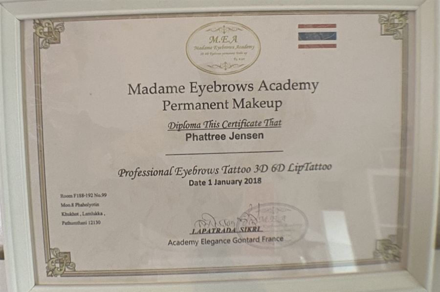

Full lip color
Fyldig, dækkende farve over hele læben. Giver en klar læbestift-effekt og en tydelig form.
Passer til: dig, der elsker læbestift og ønsker en markant, holdbar farve.
Friske, velformede læber hver dag – uden læbestift. Fra en let lip blush til fuld farve – 2.000 kr. pr. behandling, udført af kosmetisk tatovør Phattree Nancy Jensen.
Permanent makeup på læberne – også kaldet kosmetisk tatovering af læber eller lip tattoo – er en behandling, hvor pigment lægges i hudens øverste lag. Det kan give læberne mere farve, en tydeligere kontur og et fyldigere udtryk. Resultatet er semi-permanent og holder typisk 1–3 år.
Form og farve tilpasses altid dine læber, din hudtone og det udtryk, du ønsker. Vi starter med en konsultation, hvor vi tegner formen op og vælger farven sammen, så du ser og godkender resultatet, før vi begynder.
Book via telefon 28 68 93 84 eller e-mail copenhagencos@gmail.com.
Fyldig, dækkende farve over hele læben. Giver en klar læbestift-effekt og en tydelig form.
Passer til: dig, der elsker læbestift og ønsker en markant, holdbar farve.
En defineret kontur, der skygges blødt ind mod læbens midte – uden hård streg. Fremhæver formen og kan få læberne til at se fyldigere ud.
Passer til: utydelige eller lidt asymmetriske læbekanter.
Farven er mørkest ved kanten og bliver gradvist lysere mod midten. Giver dybde og en flot 3D-effekt.
Passer til: dig, der ønsker fylde og definition med et blødt udtryk.
Let, gennemsigtig farve over hele læben – som en tonet læbepomade. Naturligt og friskt.
Passer til: blege eller ujævnt farvede læber og et diskret, naturligt look.
Blød vandfarve-effekt uden markeret kontur. Farven lægges i lette lag med slørede overgange.
Passer til: dig, der ønsker det mest naturlige resultat med en frisk glød.
Ved konsultationen finder vi sammen den teknik og farve, der passer til dine læber og din hudtone.
2.000 kr. pr. behandling – samme pris for alle fem teknikker. Konsultation, opmåling og farvevalg er inkluderet.

Kosmetisk tatovering kræver viden om huden, hygiejne og præcist håndværk – oven på min baggrund som lægeeksamineret kosmetolog.
En touch-up anbefales efter 6–8 uger for en jævn og holdbar farve.
Permanent makeup på læberne koster 2.000 kr. pr. behandling for alle fem teknikker: full lip color, shaded lip liner, ombré lips, lip blush og aquarelle lips. Konsultation, opmåling og farvevalg er inkluderet.
Lip blush giver en let, gennemsigtig farve, der ligner en tonet læbepomade. Full lip color giver en fyldig, dækkende farve over hele læben, der minder om læbestift.
Typisk 1–3 år, afhængigt af hudtype, teknik, farve og livsstil. Sol og rygning får farven til at blegne hurtigere. Derefter kan læberne opfriskes.
Læberne er følsomme, men der bruges bedøvende creme før og under behandlingen, så de fleste oplever det som ubehageligt snarere end smertefuldt.
Ja, men behandlingen kan udløse et udbrud. Tal med din læge om forebyggende medicin før behandlingen, og book ikke, mens du har et aktivt forkølelsessår.
Ring på tlf. 28 68 93 84 eller skriv til copenhagencos@gmail.com. Vi starter med en konsultation, hvor vi aftaler teknik, form og farve.
Ring eller skriv, så finder vi en tid til konsultation og behandling.
Ring 28 68 93 84 Skriv en e-mail